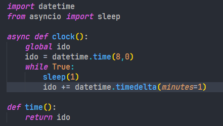

Development
Itt találhatóak a fejlesztői dokumentációk.
Dialogues
A dialógusok túl hosszúnak bizonyultak, így úgy döntöttünk, hogy egy külön JSON fájlba írjuk őket.

Így lehetőségünk nyílt egyéb funkciókra, mint például a karakterenkénti kiírás.
Python
Requirements
A fejlesztés során felhasznált és játék futtatásához szükséges pip csomagok:
Idő
Az idő a játék során folyamatosan telik, tetteinkkel pedig tovább gyorsítjuk (vagy lassítjuk) azt.
Layout
A rich librarynek köszönhetően a játék grafikai felépítése
egy táblázat alapú rendszerben készült, amit a terminál folyamatosan frissít.